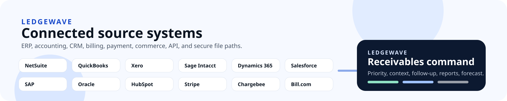

Receivables snapshot import
Bring open receivables into the product through validated CSV intake so the dashboard, queues, and reports read from one structured portfolio.
Ledgewave starts with the data finance already has. Most deployments begin with receivables and planned billing files, then add customer-specific ingest only when the workflow and field mapping justify it.
These intake paths support a receivables workflow that starts cleanly and can expand as data needs mature.

Bring open receivables into the product through validated CSV intake so the dashboard, queues, and reports read from one structured portfolio.
Bring expected billing into the same operating model through CSV so forecast review is not limited to what is already open.
For customers with technical support, onboarding can include API ingest for customer records and related workflow mapping.
Invoice and payment APIs can be introduced when file-based intake is not the right long-term fit for the customer environment.
Operational notes can also be introduced through API work if the rollout requires them to enter the workflow from another system.
Every deployment still depends on mapping keys, checking file shape, and validating what the team needs for the first live workflow.
The onboarding path starts with the operating workflow, then adds broader ingest only where it improves daily receivables work.
Review the receivables export, planned billing sample, and the fields needed to run the first weekly cycle cleanly.
Confirm invoice uniqueness, customer naming, dates, balances, and any required forecast or follow-up fields before go-live.
Get the intake, prioritization, draft follow-up, and reporting loop working before adding more technical surface area.
If the customer needs API ingest for customer, invoice, payment, or note records, add that work after the core workflow is running well.
Teams usually get more clarity by confirming file shape, field coverage, and the initial workflow than by debating a long connector list.
Most teams start with exported receivables files and planned billing files. For customers with technical support, onboarding can also include API ingest for customer, invoice, payment, and note records.
Yes. CSV-first onboarding is the most practical starting point for many teams because it gets the weekly workflow live before broader data work is added.
No. The usual path is to launch the receivables workflow with the files and fields required for the initial workflow, then expand only if additional ingest is needed.
No. Ledgewave uses managed onboarding. Data mapping, validation, and API ingest work are planned with each customer instead of presented as a one-click connector marketplace.
The fastest evaluation conversations start with the data you already have and the weekly receivables process you want to clean up first.
Finance operators, systems partners, and technical evaluators reviewing whether the onboarding paths match their operating environment.
One receivables export, one planned billing sample if available, and a clear description of the first reporting or follow-up problem to solve.
Use the contact or demo flow and call out whether you want to start with files only or discuss API ingest.
See how the onboarding model supports the actual weekly receivables cycle.
Review the dashboard, draft outreach, invoice detail, and forecast surfaces that depend on the imported data.
See how onboarding needs and implementation work shape the proposal.
Start a data-specific conversation and outline the files or API work you want to discuss.